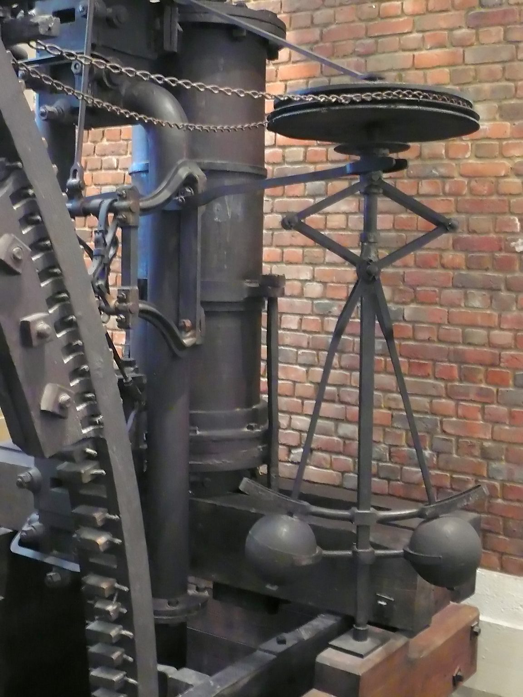
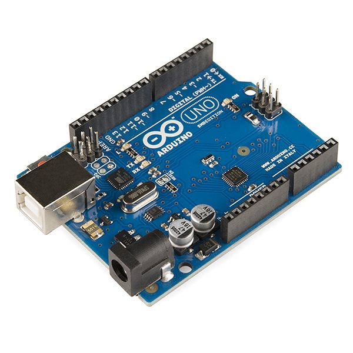
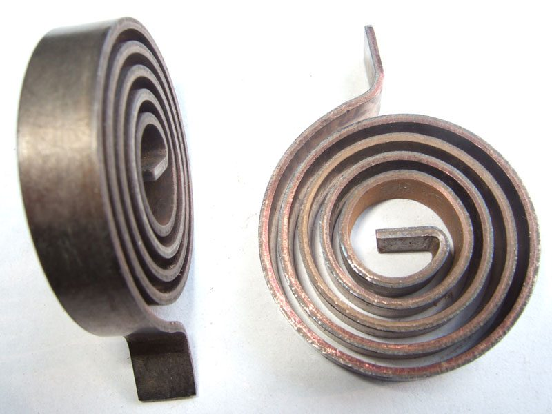
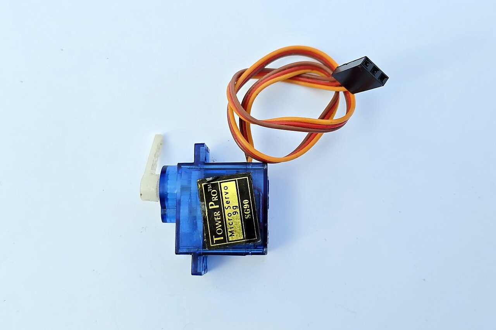

Poner el tiempo y rezar
Una tostadora nunca prueba el pan. Un horno sí, y por eso acierta aunque le abras la puerta. Toda la unidad cabe en esa diferencia.
De qué va esta unidad
En 2.º aprendiste a mover cosas; el que decía cuándo seguías siendo túVoz sintetizada sobre guión propio. La boca sigue el volumen real de la voz: se mueve cuando habla y se para en los silencios.
Empezamos por un encargo que es de verdad, y que en un mes puede ser el vuestro. En el aula hay una planta. Llegan las vacaciones de Navidad: quince días con el instituto cerrado.
Con lo que aprendiste en 2.º ya sabes montarlo. Una bomba pequeña, un depósito, un tubo y una placa que cuente el tiempo. Y el programa se escribe solo:
Funciona. El jueves. Ahora mira lo que puede pasar en quince días:
- Entra una semana de frío y lluvia. La tierra no se seca, pero la bomba riega igual todos los días: la maceta se encharca y la raíz se pudre.
- Entra una semana de sol y calefacción encendida. Veinte segundos no llegan ni de lejos, y la planta se seca con el depósito lleno al lado.
- El conserje pasa el martes y la riega a mano. La bomba no se entera y riega otra vez.
La reacción normal es afinar el tiempo: si 20 s no valen, prueba con 15, o con 30. ¿Por qué eso no arregla nada? ¿Qué tiene el problema que no se puede resolver eligiendo mejor el número?
Porque cualquier número que elijas está calibrado para un día concreto, y el mundo no se queda quieto. Pero hay algo peor, y es lo que de verdad importa: tu máquina nunca mira la maceta. Riega, y no tiene la menor idea de si lo ha hecho bien.
En 2.º montaste mecanismos que movían cosas, y funcionaban. Lo que no se dijo entonces es que en todos ellos el que decidía cuándo y cuánto eras tú: tú pedaleabas, tú dabas a la manivela, tú pulsabas el interruptor. Toda esta unidad va de quitarte a ti de en medio sin que la máquina se vuelva tonta.
El problema del riego lo tienes en casa, en dos aparatos que están a tres metros uno del otro.
La tostadora
Le pones dos minutos. Baja la palanca, calienta dos minutos y salta. Si el pan está congelado sale crudo; si la rebanada es fina sale negra. La tostadora nunca prueba el pan.
El horno
Le pones 180 grados. No le has dicho cuánto tiempo tiene que calentar, ni con cuánta fuerza: le has dicho el resultado que quieres. Y él se las apaña, aunque abras la puerta.
Fíjate en que la diferencia no es la tecnología. Las dos son resistencias eléctricas que calientan. La diferencia es que una tiene un termómetro dentro y la otra no.
Definiciones
Sistema de control: el conjunto de elementos que gobierna una máquina para que haga lo que queremos.
Consigna (o referencia): el valor que le pedimos. Los 180 °C del horno, el 40 % de humedad de la maceta.
Lazo abierto: la orden que se da no depende del resultado. Se aplica y ya. La tostadora, el riego por temporizador, un semáforo de ciclo fijo.
Lazo cerrado: se mide el resultado, se compara con la consigna y se corrige la orden. El horno, la nevera, el cargador del móvil.
Realimentación (o retroalimentación): esa vuelta de la medida hacia quien decide. Es lo único que distingue los dos lazos.
Perturbación: todo lo que cambia el resultado y no habías previsto. El frío, la puerta abierta, el conserje.
Ahora los dos a la vez, con números. Los dos hornos de la escena llevan exactamente la misma resistencia de 1500 W y las mismas pérdidas. El de la izquierda aplica siempre el 64 % de su potencia, que es lo que alguien calculó un día para clavar los 180 °C. El de la derecha mira el termómetro. Mételes una perturbación y mira quién se entera.
Lazo abierto · la tostadora
20,0 °C
Lazo cerrado · el horno con termóstato
20,0 °C
Con la cocina a 20 °C y la puerta bien cerrada, los dos aciertan. El lazo abierto no es tonto: está bien calibrado. Mientras el mundo sea el del día de la calibración, es más barato y más simple, y hace su trabajo.
Baja la cocina a 5 °C. El horno de la izquierda sigue aplicando su 64 %, porque es lo único que sabe hacer, y se queda en 5 + 0,64 · 1500 / 6 = 165 °C. Quince grados de menos, y ni se ha enterado. El de la derecha sigue en 180: simplemente tiene la resistencia encendida más rato.
Y ahora sube las pérdidas. A partir de 10 W/°C, el de la derecha tampoco llega. Y no es que se haya estropeado: es que para mantener 180 °C con esas pérdidas haría falta más del 100 % de la resistencia, y no hay más del 100 %. Eso se llama saturación, y conviene aprenderlo pronto: un lazo cerrado corrige mientras le quede actuador. Cuando lo gasta todo, ningún control del mundo lo arregla; hay que poner una resistencia mayor o tapar las rendijas.
Cuándo vale cada uno
| Lazo abierto | Lazo cerrado |
| Barato: no lleva sensor | Cuesta más: hay que medir |
| Nunca se vuelve loco | Puede oscilar, y hay que ajustarlo |
| No aguanta perturbaciones | Las corrige mientras le quede actuador |
| Vale si el entorno no cambia y la desviación no importa | Hace falta si el entorno cambia o la desviación cuesta dinero o seguridad |
Un lavavajillas es lazo abierto en los tiempos y lazo cerrado en la temperatura del agua. Casi ninguna máquina real es solo una cosa.
Quién descubrió esto, y cuándo
La realimentación no la inventó la electrónica. Es mucho más vieja, y funcionó durante siglos sin que nadie supiera explicarla.
- Hacia 270 a. C., Ktesibios de Alejandría construye un reloj de agua con un flotador que cierra la entrada cuando el depósito se llena. El nivel mide, el flotador compara y la válvula corrige. Es el lazo cerrado más antiguo del que hay noticia, y lo sigues teniendo en la cisterna del váter.
- 1788: James Watt monta el regulador de bolas en sus máquinas de vapor. Si el eje se embala, las bolas se abren por la fuerza centrífuga, y al abrirse cierran la válvula del vapor. La máquina se frena a sí misma.
- 1868: James Clerk Maxwell publica On Governors, porque algunos de aquellos reguladores, en vez de estabilizarse, se ponían a oscilar cada vez más hasta reventar la máquina. De ese artículo nace la teoría del control.

Un repaso corto a lo de esta sesión, con más ejemplos de los dos tipos de lazo. Nadie del proyecto lo ha visto entero: están comprobados el título y el canal, no el contenido. El vídeo no se carga hasta que lo pulsas, y se reproduce sin cookies de seguimiento. Si la red del centro bloquea YouTube, ábrelo directamente aquí. Es obra de su autor y no forma parte del material publicado bajo la licencia de esta página.
Primera parte · Clasificar (6 min)
Para cada aparato, decid si es lazo abierto o lazo cerrado y, sobre todo, qué se mide (o qué no se mide, que es lo que lo delata). Una línea por aparato en la libreta.
- El limpiaparabrisas del coche en velocidad fija.
- El cruise control de un coche, que mantiene 120 km/h cuesta arriba.
- Un microondas puesto a dos minutos.
- El depósito del váter.
- Una farola con célula fotoeléctrica.
Segunda parte · Rescatar un proyecto (8 min)
Elegid uno de los cinco proyectos del catálogo (riego, ventilación, contenedor, barrera o lámpara) y dibujad las dos versiones:
- La versión en lazo abierto: qué orden fija le dais.
- La versión en lazo cerrado: qué medís y con qué lo comparáis.
- Y una perturbación concreta, del instituto, que hunda a la primera y no a la segunda. Concreta: no vale «si cambia el tiempo».
Tercera parte · Medir en la escena (6 min)
Volved a la escena de los dos hornos. Dejad la cocina a 20 °C y subid las pérdidas de una en una, pulsando Avanza 1 hora cada vez.
- ¿A partir de qué valor de pérdidas el lazo cerrado deja de llegar a los 180 °C?
- Comprobadlo con la cuenta, sin la escena: la potencia que hace falta de media es k · (180 − 20) / 1500, y no puede pasar de 1. Despejad k.
- ¿Coincide lo que habéis medido con lo que dice la cuenta? Si no, uno de los dos está mal: averiguad cuál.
Cómo se evalúa
- Los cinco aparatos clasificados, diciendo qué se mide (3 puntos).
- Los dos diagramas del proyecto, con la perturbación concreta (4 puntos).
- El valor de k medido y despejado, y los dos coinciden (3 puntos).
- ¿Qué es exactamente lo que distingue un lazo abierto de uno cerrado?
Ver respuesta
Una sola cosa: si la medida del resultado vuelve a quien decide. No es la tecnología, ni si hace falta una persona, ni si es eléctrico o mecánico.
- El horno en lazo abierto se queda en 165 °C cuando la cocina baja a 5 °C. ¿Está estropeado?
Ver respuesta
No. Está haciendo exactamente lo que le pidieron: aplicar el 64 % de la potencia. Lo que falla no es la máquina, es la suposición de que la cocina iba a estar siempre a 20 °C.
- ¿Hay alguna perturbación que también tumbe al lazo cerrado?
Ver respuesta
Sí: cualquiera que le pida más de lo que su actuador puede dar. Con pérdidas de 10 W/°C haría falta más del 100 % de la resistencia. Se llama saturación, y no se arregla controlando mejor.
- ¿Por qué el regulador de Watt es un buen ejemplo para empezar?
Ver respuesta
Porque la pieza que mide la velocidad y la que corrige el vapor son la misma, y se ven las dos a la vez. En un sistema electrónico eso mismo pasa, pero escondido dentro de un chip.
Medir, comparar, actuar: no hay una cuarta
El sensor no habla en grados ni en por ciento: habla en números del 0 al 1023. Antes de restar hay que traducir.
Vuestro compañero de la otra clase ha montado el aviso de aula mal ventilada y le funciona. Le pedís cómo lo ha hecho y os manda dos cosas: una foto del montaje y el código.
Y no os sirve de nada. La foto es una maraña de cables de colores; el código son cuarenta líneas sin un comentario. Queréis aprovechar la idea para el riego, que es otro sensor y otro actuador, y no sabéis qué trozo hace qué.
Probándolo: que uno del grupo explique con palabras, en treinta segundos, cómo funciona el horno de la sesión pasada. Que otro lo apunte. Comparad con lo que ha escrito otro grupo.
Van a salir descripciones distintas, y todas más o menos correctas. Y ese es el problema: no se pueden comparar dos diseños contados con palabras. Es exactamente lo que te pasó en 2.º cuando intentabas describir una pieza sin dibujarla.
Hace falta un plano. Pero un plano de cables tampoco sirve, porque los cables cambian en cada proyecto. Lo que no cambia de un proyecto a otro es qué papel hace cada trozo. Y eso es lo que se dibuja.
Las piezas de todo sistema de control
- Sensor (o transductor): convierte una magnitud física (temperatura, humedad, luz, distancia) en una señal eléctrica que el programa puede leer como un número.
- Consigna: el valor que queremos, expresado en las mismas unidades que la medida.
- Comparador: resta. error = consigna − medida (o al revés; lo que no se puede es cambiar de criterio a mitad).
- Controlador: decide qué hacer con ese error. Es el cerebro, y en 4.º vive dentro del Arduino.
- Actuador: convierte la decisión en un efecto físico. Bomba, motor, relé, LED, resistencia, servo.
- Proceso (o planta): lo que se quiere gobernar. La maceta, el aula, el horno.
- Realimentación: la flecha que devuelve la medida al comparador. Es la única que va hacia atrás, y es la que cierra el lazo.
Ahora míralo funcionando. El diagrama de abajo no es un dibujo: los números que hay dentro de cada caja son los que están circulando en ese instante. Cambia de proyecto y fíjate en lo que cambia… y en lo que no.
Cambia de proyecto en la escena y mira el diagrama: las cajas son las mismas. Lo que cambia es lo que hay dentro. Por eso el diagrama de bloques es una herramienta y no un adorno: te deja comparar el riego con la ventilación, que no tienen nada que ver, porque los pone en el mismo idioma.
Y prueba a cortar la realimentación. No se rompe nada: simplemente el controlador se queda sin saber dónde está, y lo único que le queda es un cronómetro. Has vuelto a la sesión 1.
El sensor no habla tu idioma
Aquí está el fallo que más se comete, y merece la pena verlo despacio. Una sonda de humedad no da un porcentaje. Da un número entre 0 y 1023.

La lectura analógica de Arduino
analogRead(A0) devuelve un número entero de 0 a 1023. Son
1024 valores distintos (210, de ahí lo de «10
bits»): el 0 corresponde a 0 V y el 1023, a 5 V.
Para pasar una lectura a voltios:
V = lectura · 5 / 1023
Y de ahí sale la resolución: 5 / 1023 = 0,0049 V, casi cinco milésimas de voltio. Lo que esté por debajo de eso, el Arduino no lo ve. No es un defecto de la placa: es que un número entero no puede tener infinitos escalones.
Calibrar un sensor: la recta de dos puntos
Un sensor se calibra midiendo dos situaciones que ya conoces y trazando la recta que las une.
L = L0 + m · X con m = (L1 − L0) / (X1 − X0)
Ejemplo del riego. Con la sonda al aire (humedad 0 %) marca 620; hundida en un vaso de agua (humedad 100 %) marca 280.
- Pendiente: m = (280 − 620) / (100 − 0) = −3,4 cuentas por cada punto de humedad. Es negativa: cuanta más agua, menos marca.
- La recta: L = 620 − 3,4 · H
- Del revés, para saber la humedad a partir de la lectura: H = (620 − L) / 3,4
- Comprobación: si lee 450, entonces H = (620 − 450) / 3,4 = 50 %.
Regla: antes de restar, los dos números tienen que estar en la misma unidad. O traduces la consigna a cuentas, o traduces la lectura a por ciento. Las dos valen. Mezclarlas, no.
El signo del error importa, y mucho. En el riego, el error positivo significa «está más seco de lo que quiero», y la respuesta es regar. En la lámpara, con la misma resta te saldría al revés, porque allí más luz es más lectura.
Si te equivocas de signo, el sistema no se para: hace lo contrario de lo que hay que hacer, y cada corrección empeora la situación, que a su vez pide una corrección mayor. Eso se llama realimentación positiva, y ya la has oído: es el pitido que sale cuando acercas un micrófono a su altavoz.
Por cierto, el diagrama de bloques también vale para cosas que no son máquinas. La temperatura de tu cuerpo se mantiene en 36,5 °C con el mismo esquema: sensores en la piel y en el hipotálamo, comparación con una consigna, y actuadores que son el sudor y el tiritar.
El diagrama de bloques dibujado y explicado caja por caja. Nadie del proyecto lo ha visto entero: están comprobados el título y el canal, no el contenido. El vídeo no se carga hasta que lo pulsas, y se reproduce sin cookies de seguimiento. Si la red del centro bloquea YouTube, ábrelo directamente aquí. Es obra de su autor y no forma parte del material publicado bajo la licencia de esta página.
Primera parte · Los diagramas (7 min)
Dibujad en la libreta el diagrama de bloques de dos de los cinco proyectos del catálogo, uno debajo del otro. Cada caja, con su rótulo y con lo que hay dentro en ese proyecto: no vale poner «sensor» a secas, hay que decir cuál.
Y la flecha de realimentación bien dibujada, con la punta llegando al comparador.
Segunda parte · La calibración (7 min)
Habéis medido una LDR con el divisor montado y anotado dos puntos:
- Con el aula a oscuras (0 lux): lectura 90.
- Con la persiana abierta, y el luxómetro del móvil marcando 600 lux: lectura 870.
- Calculad la pendiente y escribid la recta L = L0 + m · E.
- La norma de iluminación para estudiar pide 300 lux. ¿Qué lectura es esa?
- El sensor está marcando 415. ¿Cuántos lux hay? ¿Hay que encender la lámpara?
- Escribid el error con su signo, y decid en una línea qué significa que sea positivo.
Tercera parte · En Tinkercad (6 min)
En tinkercad.com → Circuits, montad un potenciómetro en A0 (que hace de sensor de mentira, pero da el mismo 0-1023) y un LED en el pin 9 con su resistencia. Sketch:
int lectura = analogRead(A0); if (lectura < UMBRAL) digitalWrite(9, HIGH); else digitalWrite(9, LOW);
Anotad tres lecturas con el potenciómetro en tres posiciones y el umbral que habéis elegido, con una línea de por qué ese.
Cómo se evalúa
- Los dos diagramas completos, con la realimentación bien puesta (4 puntos).
- La recta, las dos conversiones y el signo del error (3 puntos).
- El circuito funcionando y las tres lecturas anotadas (3 puntos).
- ¿Cuántas piezas hacen falta como mínimo para un lazo cerrado, y cuáles?
Ver respuesta
Tres: algo que mida (sensor), algo que compare con la consigna y decida (comparador y controlador) y algo que actúe (actuador). Más la flecha de vuelta, que no es una pieza pero es lo que las convierte en un lazo.
- La sonda lee 450 y la consigna es del 40 %. ¿Cuál es el error?
Ver respuesta
No se puede restar todavía: 450 son cuentas y 40 es un porcentaje. Hay que pasar la consigna a cuentas: L = 620 − 3,4 · 40 = 484. Y ahora sí: error = 450 − 484 = −34. Negativo, o sea que hay más humedad de la pedida: no se riega.
- ¿Qué resolución tiene la entrada analógica de un Arduino Uno?
Ver respuesta
5 / 1023 = 0,0049 V, unos 5 mV. Hay 1024 valores posibles (del 0 al 1023) repartidos entre 0 y 5 V.
- ¿Qué pasa si te equivocas en el signo del error?
Ver respuesta
Que el sistema corrige al revés y cada corrección empeora las cosas: realimentación positiva. Se dispara hasta que algo lo para. Es el acople del micrófono con el altavoz.
La calefacción que arranca y para, y por qué no está rota
Un termóstato perfecto se destruiría en una tarde. La oscilación que notas en casa la puso alguien a propósito.
En casa, la calefacción está puesta a 21 °C. Coges un termómetro de verdad, lo dejas en el salón y lo miras cada cinco minutos. Y no marca 21. Marca 20,4… luego 20,9… luego 21,5… y otra vez para abajo.
¿Está estropeado el termóstato? Y si no lo está, ¿por qué no clava los 21 °C, si el de la sesión 1 clavaba los 180?
No está estropeado. Y para ver por qué, hagamos lo contrario: imagina un termóstato perfecto, que enciende en cuanto baja de 21,00 y apaga en cuanto pasa de 21,00. Suena a lo que quieres. Vamos a contar cuántas veces conmuta.
Un relé de los que llevan estos aparatos aguanta unos 100.000 ciclos con carga. 100.000 / 36.000 = 2,8 horas. El termóstato perfecto se destruiría a sí mismo en una tarde.
Así que la oscilación de tu salón no es un fallo: es lo que alguien puso a propósito para que el aparato no se suicidara. Y esta sesión va de eso: de qué se gana y qué se paga.
Control todo-nada
Control todo-nada (u on-off, o de dos posiciones): el actuador solo tiene dos estados, encendido y apagado, y el controlador elige entre ellos con una comparación. Es el control más barato y más usado que existe.
Histéresis (o banda, o diferencial): en vez de un umbral, se usan dos. Con una consigna C y una banda h:
- Enciende cuando la medida baja de C − h/2.
- Apaga cuando la medida sube de C + h/2.
- Entre los dos umbrales, no hace nada: se queda como estaba.
Lo de «se queda como estaba» es la clave: el controlador tiene que acordarse de si estaba encendido o apagado. Con un solo umbral no hace falta memoria; con histéresis, sí.
El pseudocódigo, que es más corto que la explicación
encendida ← falso
repetir siempre:
T ← leer sensor
si encendida y T > consigna + h/2 → apagar; encendida ← falso
si no encendida y T < consigna − h/2 → encender; encendida ← verdadero
Y ahora, la consecuencia que no se puede esquivar. Si el actuador solo sabe estar a tope o parado, la temperatura no puede quedarse quieta: sube mientras calienta y baja mientras no. Lo único que puedes elegir es cuánto sube y baja. Mueve la banda y míralo.
Lo que se gana y lo que se paga
| Banda estrecha | Banda ancha | |
| Temperatura | Ajustada, no se nota | Se nota frío y calor |
| Conmutaciones | Muchas | Pocas |
| Vida del relé | Corta | Larga |
| Arranques de la caldera | Muchos (y arrancar desgasta y consume) | Pocos |
La cuenta de la vida del relé: horas = ciclos que aguanta / ciclos por hora. Con 100.000 ciclos y 8,5 ciclos a la hora salen 11.700 horas. Con 43 ciclos a la hora, 2.300 horas: cinco veces menos, por haber querido medio grado más de precisión.
El termóstato que no llevaba programa

Los termóstatos antiguos llevaban, en la punta de esa espiral, una ampolla de vidrio con una gota de mercurio. Al girar la espiral, la ampolla se inclinaba y la gota rodaba de un extremo al otro cerrando o abriendo el contacto.
Y ahí está lo bonito: para que la gota volviera, la ampolla tenía que inclinarse bastante más que lo que había costado echarla. Es decir, la histéresis salía gratis, de la propia física de la gota. En un termóstato electrónico no hay gota, y por eso hay que programársela. Lo que antes era una limitación del cacharro, hoy es una decisión de diseño.
El sensor que se entera tarde
Marca en la escena la casilla del retardo y mira la amplitud. Con la misma banda de 1 °C, la habitación oscila bastante más de un grado. Y no has tocado la banda.
Lo que pasa es que el termóstato mide lo que había hace dos minutos. Cuando se entera de que ya ha llegado a 21,5 y manda apagar, la habitación de verdad va por 22,2. Y al revés al enfriarse. El retardo se paga siempre en sobrepasamiento, y es la razón de que un termóstato se ponga en la pared, a metro y medio del suelo, lejos del radiador, de la ventana y de la tele. No es estética: es que ahí se entera antes.
Lo mismo te va a pasar en el riego. El agua tarda en llegar a la sonda; si no lo tienes en cuenta, el sistema sigue regando cuando ya sobra.
El porcentaje de tiempo encendida no lo eliges tú. Sale del balance de energía: lo que entra por la caldera tiene que igualar a lo que se escapa por las paredes. Por eso la escena, además de medirlo sobre la simulación, te enseña la cuenta 60 · (T − Tcalle) / P al lado: son el mismo número.
Y de ahí sale algo que sorprende: poner una caldera más potente no calienta más, porque el termóstato la apaga antes. Lo que hace es conmutar más a menudo. Sube la potencia en la escena y mira los ciclos por hora.
El mismo experimento de la escena, montado con componentes de verdad. Nadie del proyecto lo ha visto entero: están comprobados el título y el canal, no el contenido. El vídeo no se carga hasta que lo pulsas, y se reproduce sin cookies de seguimiento. Si la red del centro bloquea YouTube, ábrelo directamente aquí. Es obra de su autor y no forma parte del material publicado bajo la licencia de esta página.
Primera parte · La tabla (8 min)
Con la escena, dejad la consigna en 21 °C, la calle en 5 °C y la caldera en 2500 W, y rellenad esta tabla en la libreta moviendo solo la histéresis:
| Banda | Ciclos/hora | Oscila | Vida del relé |
| 0,2 °C | |||
| 0,5 °C | |||
| 1,0 °C | |||
| 2,0 °C | |||
| 3,0 °C |
Segunda parte · Decidir (4 min)
Elegid una banda para el aula y justificadla con dos números de vuestra tabla. No vale «porque es la del medio». Y añadid una línea: ¿qué cambiaríais si en vez de una calefacción fuera la nevera del comedor, donde medio grado de más estropea la comida?
Tercera parte · El retardo (5 min)
Volved a 1,0 °C y marcad la casilla del retardo.
- ¿Cuánto oscila ahora? ¿Cuánto se ha pasado de la banda que habíais puesto?
- ¿Sigue valiendo la banda que elegisteis? Si no, ¿hay que subirla o bajarla?
- Escribid en una línea dónde no pondríais el sensor de vuestro proyecto, y por qué.
Cuarta parte · El programa (3 min)
Escribid el pseudocódigo del controlador con histéresis para vuestro proyecto, con vuestra magnitud y vuestros dos umbrales. Ojo a la variable que se acuerda del estado: sin ella no hay histéresis.
Cómo se evalúa
- La tabla completa, con las cuatro columnas (4 puntos).
- La banda elegida y justificada con números de la tabla (2 puntos).
- El retardo medido y su consecuencia sobre la decisión (2 puntos).
- El pseudocódigo, con la variable de estado (2 puntos).
- ¿Por qué un control todo-nada tiene que oscilar?
Ver respuesta
Porque su actuador solo sabe estar a tope o parado. Mientras calienta, sube; mientras no, baja. No hay ningún ajuste que lo deje quieto: lo único que se puede elegir es cuánto oscila.
- Consigna 21 °C y banda de 1,4 °C. ¿A qué temperaturas enciende y apaga?
Ver respuesta
Enciende al bajar de 21 − 0,7 = 20,3 °C y apaga al pasar de 21 + 0,7 = 21,7 °C. La banda va repartida a los dos lados de la consigna.
- Si estrechas la banda, ¿qué ganas y qué pierdes?
Ver respuesta
Ganas precisión: la temperatura se nota menos. Pierdes vida del relé y arranques de la caldera, que es lo que más la desgasta. Con 100.000 ciclos, pasar de 8 a 43 ciclos por hora divide la vida entre cinco.
- La banda es de 1 °C y la habitación oscila 2,4. ¿Qué pasa?
Ver respuesta
Que el sensor mide tarde. Cuando avisa de que hay que apagar, la habitación ya se ha pasado, y otro tanto al enfriarse. El retardo siempre se paga en sobrepasamiento, y por eso importa dónde se coloca el sensor.
Decidir no mueve nada
El servo pone 1,8 kg·cm y el listón pesa 150 g. No sobra: no llega, y por más de tres veces.
Un encargo del centro: una barrera para la entrada del aparcamiento de bicis, que se abra sola cuando alguien pasa la tarjeta. Ya sabes montar el sensor, el comparador y el actuador. El actuador va a ser un servo SG90, que cuesta dos euros y en su hoja de características pone 1,8 kg·cm.
La barrera es un listón de pino de 80 cm que pesa 150 g, y gira sobre uno de sus extremos.
1,8 kg son 1800 gramos, y el listón pesa 150. Sobra por doce, ¿no? Escríbelo antes de seguir leyendo: ¿sí o no?
No sobra: no llega. Y no por poco, sino por más de tres veces. Vamos a ver dónde está la trampa, porque es la misma que hace que puedas abrir una puerta con un dedo por el pomo y no puedas moverla empujando junto a la bisagra.
Levantar un peso y girarlo desde un extremo no son la misma cosa.
El par
Par (o momento de una fuerza): lo que mide la capacidad de una fuerza para hacer girar algo alrededor de un eje.
M = F · d
F en newtons, d en metros (la distancia del eje a la línea de la fuerza), M en newton · metro (N·m). La misma fuerza, al doble de distancia, hace el doble de par: eso es la palanca de 2.º, con su nombre de mayor.
El peso es una fuerza: P = m · g, con g = 9,81 m/s². Un kilo pesa 9,81 N.
Una barra uniforme que gira sobre un extremo: todo su peso actúa como si estuviera en el centro, así que la distancia es L/2, no L. Este es el error más frecuente, y da justo el doble.
Los kg·cm de los catálogos
Los fabricantes de servos no dan el par en N·m: lo dan en kg·cm. Eso no es una unidad de par de verdad; es una abreviatura de «el peso de 1 kg colgado a 1 cm del eje».
1 kg·cm = 1 · 9,81 N · 0,01 m = 0,0981 N·m
Así que un servo de 1,8 kg·cm da 1,8 · 0,0981 = 0,177 N·m. Y ahora ya se pueden comparar peras con peras.
La barrera, con la cuenta entera
Paso a paso, con las unidades en cada línea
- Peso del listón: P = m · g = 0,150 kg · 9,81 m/s² = 1,47 N
- Distancia al eje (barra uniforme): d = L/2 = 0,80/2 = 0,40 m
- Par necesario: M = F · d = 1,47 · 0,40 = 0,589 N·m
- En kg·cm: 0,589 / 0,0981 = 6,0 kg·cm
- El servo da 1,8. Hace falta 6,0. No vale: pide 3,3 veces más.
Y ojo al caso que hay que calcular: el peor. El par máximo se pide con la barrera horizontal; cuando está vertical, el par es cero. Si calculas con la barrera a medio subir, te sale un número bonito y el proyecto no arranca.
Los engranajes de 2.º, ahora con par
Relación de transmisión, velocidad y par
i = z1 / z2 = n2 / n1
Igual que en 2.º: z son dientes, n son vueltas por minuto, el 1 es la entrada (el motor) y el 2, la salida. Lo nuevo es la otra mitad:
n2 = n1 · i y M2 = M1 / i · η
Y esto no es una fórmula que memorizar: es que la energía no se crea. La potencia de un eje que gira es P = M · ω. Si a la salida las vueltas se dividen entre tres, la potencia solo puede mantenerse si el par se multiplica por tres. Reducir velocidad es multiplicar fuerza: lo mismo que la palanca, con otra forma.
η (rendimiento): lo que se pierde en rozamiento. En un par de engranajes de plástico impreso, 0,90 es una estimación razonable. Nunca es 1, y un tren de tres etapas pierde tres veces.
Potencia: P = M · ω, con ω = 2π · n / 60 (rad/s), M en N·m y P en vatios.
Al banco de pruebas. Los engranajes están dibujados a escala de verdad: los dos comparten el módulo (el tamaño del diente), el radio es r = módulo · z / 2 y los ejes están a r1 + r2, que es la única distancia a la que dos ruedas engranan. Cambia los dientes y míralo.
Hay tres maneras de arreglar la barrera, y las tres salen de M = F · d.
- Reducir: meter engranajes. Con i = 1/4, el servo da 1,8 · 4 · 0,90 = 6,5 kg·cm. Justo justo, y además el servo solo gira 180°: con esa reductora la barrera solo sube 45°.
- Acortar el brazo: con 40 cm en vez de 80, el par se cae a 1,5 kg·cm. Baja al cuadrado, porque el listón mitad de largo pesa la mitad y tiene el brazo mitad.
- Contrapeso: 500 g a 8 cm del eje, al otro lado, restan 0,5 · 9,81 · 0,08 = 0,39 N·m. Quedan 0,589 − 0,39 = 0,196 N·m = 2,0 kg·cm.
El contrapeso es de lejos el más barato, no gasta energía y no se estropea. Por eso las barreras de verdad lo llevan: la próxima que veas, mírale el codo. Esto es lo que quiere decir «resolverlo mecánicamente», y casi siempre gana a resolverlo con más motor.
Cómo se elige un motor (criterio de clase, no norma oficial)
- Calcula el par necesario en el caso peor: barrera horizontal, depósito lleno, tapa con basura encima.
- Multiplícalo por 2. Ese margen se lo comen el rozamiento de los ejes, el par extra que hace falta para arrancar desde parado y la pila a media carga.
- Busca un motor que dé ese par a la velocidad que necesitas. Si le falta par, reduce con engranajes. Si le falta velocidad, la reductora no te va a ayudar: al revés.
- Comprueba el tiempo de maniobra. Una barrera que tarda 40 segundos en subir no sirve, aunque el par cuadre.
Por qué se quema un motor bloqueado. La potencia mecánica de salida es P = M · ω. Si el eje no gira, ω = 0, y la potencia mecánica es cero… pero la eléctrica que entra no lo es, y encima es la máxima, porque un motor parado consume su corriente de bloqueo. Toda esa energía tiene que irse a algún sitio, y se va a calor en los bobinados. Un motor atascado no es un motor que descansa: es una estufa.
El tornillo sin fin. Ya lo viste en 2.º: reducción enorme en muy poco sitio, y no se puede mover al revés. En un sistema de control eso deja de ser una curiosidad y pasa a ser seguridad: si se va la luz, la barrera no se cae sola. Con engranajes rectos, sí se cae.
Y para cerrar: el servo ya es todo esto por dentro

Por eso a un servo no le dices «gira» sino «ponte a 40 grados»: le das una consigna, como al horno. Y por eso un motor de corriente continua a secas no sabe hacer eso: no tiene con qué enterarse de dónde está.
Repaso de la relación de transmisión de 2.º, con el paso al par que se hace en esta sesión. Nadie del proyecto lo ha visto entero: están comprobados el título y el canal, no el contenido. El vídeo no se carga hasta que lo pulsas, y se reproduce sin cookies de seguimiento. Si la red del centro bloquea YouTube, ábrelo directamente aquí. Es obra de su autor y no forma parte del material publicado bajo la licencia de esta página.
Primera parte · El par, a mano (7 min)
Elegid uno de los cinco proyectos con parte móvil (barrera, tapa del contenedor, depósito del riego que se inclina, brazo de la lámpara) y calculad el par necesario en el caso peor, en la libreta, con todos los pasos y las unidades en cada línea, como en el recuadro de la teoría.
Estimad las masas a ojo si hace falta, pero escribid de dónde sale cada número. Terminad pasando el resultado a kg·cm y multiplicando por 2.
Segunda parte · La reductora (5 min)
En el banco de pruebas, elegid el motor y buscad una pareja z1/z2 que dé margen 2 o más. Anotad: i, n2, el par disponible y el tiempo de maniobra.
¿Se puede con el servo SG90? ¿Y con el motorreductor? Si con alguno no hay manera, decidlo y explicad por qué: un «no se puede» razonado vale lo mismo que un «sí».
Tercera parte · Sin engranajes (3 min)
Proponed una solución mecánica que baje el par necesario sin tocar el motor: contrapeso, brazo más corto, mover el punto de tiro… y calculadla. Comparad los dos caminos en una línea: ¿cuál elegiríais y por qué?
Cómo se evalúa
- El par del caso peor, con todos los pasos y las unidades (4 puntos).
- La reductora elegida con su margen, su velocidad y su tiempo (3 puntos).
- La alternativa mecánica, calculada y comparada (3 puntos).
Lo que tiene que haber quedado de estas cuatro sesiones
1. Un tostador con temporizador es un sistema de control en lazo abierto porque…
2. La cocina baja de 20 a 5 °C. El horno en lazo abierto aplicaba el 64 % de sus 1500 W y se quedaba en 180 °C, con pérdidas de 6 W/°C. ¿Dónde se queda ahora?
3. Un lazo cerrado con la resistencia al 100 % no consigue llegar a la consigna. Eso significa que…
4. En un diagrama de bloques de lazo cerrado, ¿cuál es la única flecha que va hacia atrás?
5. Una sonda de humedad da 620 al aire (0 %) y 280 en agua (100 %). Está leyendo 450. ¿Qué humedad hay?
6. ¿Por qué hay que pasar la consigna al idioma del sensor antes de restar?
7. Un termóstato con consigna 21 °C e histéresis de 1 °C…
8. Si estrechas mucho la banda de histéresis…
9. Un listón uniforme de 80 cm y 150 g gira sobre uno de sus extremos. ¿Qué par hace falta para sostenerlo horizontal?
10. Un motor da 0,8 kg·cm a 200 rpm. Le pones una reductora con z1 = 20, z2 = 100 y rendimiento 0,90. ¿Qué hay en la salida?
Se corrige en tu propio navegador: no se envía ni se guarda nada. Las explicaciones aparecen al corregir, tanto en las que aciertes como en las que falles.
- ¿Por qué no vale comparar los 1,8 kg·cm del servo con los 150 g del listón?
Ver respuesta
Porque una cosa es un par y la otra una masa. Para comparar hay que convertir la masa en par, y para eso hace falta la distancia: 150 g a 40 cm del eje son 6,0 kg·cm.
- ¿Por qué una reductora multiplica el par?
Ver respuesta
Porque la potencia no se crea: P = M · ω. Si la velocidad se divide entre cinco, el par solo puede multiplicarse por cinco para que el producto se mantenga. Y ni siquiera se mantiene del todo: el rendimiento se lleva un trozo.
- ¿Por qué se calcula siempre el caso peor?
Ver respuesta
Porque un motor que solo vale en el caso cómodo no vale. La barrera horizontal, el depósito lleno y el arranque desde parado son los momentos en los que el proyecto se pone a prueba, y son los únicos que importan al elegir.
- ¿Por qué un servo SG90 es un buen resumen de toda la unidad?
Ver respuesta
Porque lleva dentro las tres piezas: un potenciómetro que mide el ángulo (sensor), un circuito que lo compara con la consigna que le mandas y un motor con reductora que corrige. Es el diagrama de la sesión 2 metido en una caja de dos euros.
Lectura del tema
Una sesión entera dedicada a leer y contestar. 30 párrafos numerados: cada uno lee el suyo en voz alta, en orden. Después, diez preguntas por escrito. Cuenta de dónde sale todo esto: la cisterna de un griego, el regulador de Watt, los ochenta años que se tardó en explicarlo y lo que cuesta un lazo cerrado que se fía de un solo sensor.
Sesión 5 en preparación
Sesión 6 en preparación
Sesión 7 en preparación
Sesión 8 en preparación
Lectura de aula
Treinta párrafos numerados y diez preguntas. Ocupa una sesión entera: se lee en voz alta por turnos, un párrafo cada uno, y luego se contesta por escrito. Trae su cabecera para el nombre, el grupo y la fecha.
Descargar el PDFLicencia y uso
Tema 4 · Mecanismos y sistemas de control · © 2026 Roberto P. García Llorente, Profesor de Tecnología en Educación Secundaria.
Publicado bajo Creative Commons Reconocimiento-CompartirIgual 4.0 Internacional. Puedes copiarlo, adaptarlo y redistribuirlo, incluso con fines comerciales, siempre que cites la autoría, indiques si lo has modificado y publiques tus versiones derivadas con esta misma licencia.
Cómo citar
Roberto P. García Llorente (2026). Tema 4 · Mecanismos y sistemas de control. https://rgllorente82-png.github.io/robertotecnologia/4eso/Tecnologia/tema4/. Bajo licencia CC BY-SA 4.0.
Qué cubre
Los textos, los dibujos y el código de esta página, que son obra propia.
No cubre las fotografías, que proceden de Wikimedia Commons y conservan su propia licencia, indicada bajo cada una. Algunas son de dominio público; las demás están bajo licencias Creative Commons compatibles con esta, y se reproducen citando autoría y licencia como exigen. Tampoco cubre las tipografías, de Google Fonts con su propia licencia.
Otros usos
Para usos que excedan la licencia, abre una incidencia en el repositorio del proyecto.